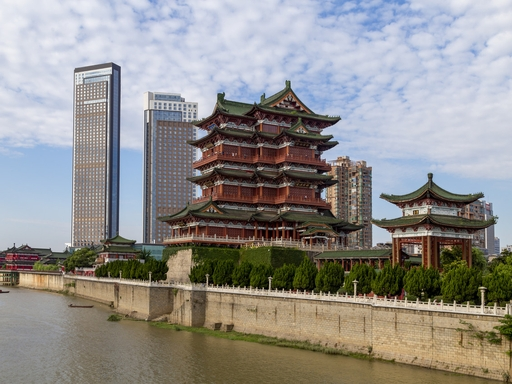
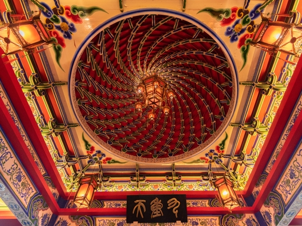
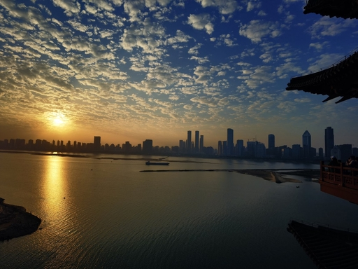
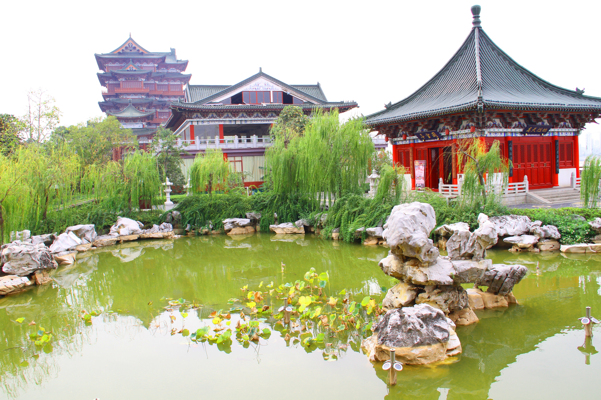

落霞与孤鹜齐飞 · 秋水共长天一色
诗赋光影 · 千古名篇 · 名人题咏
悬停翻转，品读诗笺背后的故事
王勃（650-676），初唐四杰之首。上元二年途经洪州，在阎都督的宴席上即兴写下《滕王阁序》，时年不过二十余岁。此序文辞华美、对仗工整，被誉为"天下第一骈文"。可惜王勃在渡海探父时溺水而亡，年仅二十七岁，留下了这篇千古绝唱。
"阁中帝子今何在？槛外长江空自流。"这是《滕王阁诗》的结尾，以设问作结，余韵悠长。当年建阁的滕王早已消逝在历史长河中，唯有槛外的赣江水依旧日夜奔流。物是人非的感慨，道出了人生无常的哲理，千百年来引发无数读者的共鸣。
此句被历代文人奉为写景的巅峰之作。上句写动态——落霞缓缓下沉、孤鹜翩翩飞翔；下句写静态——秋水澄澈、长天一色。动静相生、虚实相映，色彩上红（霞）与碧（水天）对比鲜明。据说此句化用自庾信《马射赋》"落花与芝盖同飞，杨柳共春旗一色"，但青出于蓝而胜于蓝。
这是《滕王阁序》中最为励志的名句。王勃当时正处于人生的低谷——被逐出沛王府、远谪交趾。然而他在序文中表达的却是昂扬向上的精神：年纪大了应当更加壮志凌云，处境艰难更要坚定信念。这种不屈服于命运的精神力量，使这两句成为后世无数仁人志士的座右铭。
"物换星移几度秋"——世间万物更替、星辰移位，不知已经过去了多少个秋天。王勃以宇宙的永恒与人生的短暂形成对比，表达了对时光流逝的深沉感慨。这一意象后来演变为成语"物换星移"，用来形容世事变迁、时光流转。
"闲云潭影日悠悠"——悠闲的白云倒映在深潭之中，日子就这样悠然流逝。王勃用"闲"字写云，用"影"字写潭，以极简的笔墨营造出空灵悠远的意境。这一句与"落霞与孤鹜齐飞"遥相呼应，一静一动，构成了《滕王阁诗》中最具画面感的对仗。
滕王阁各层悬挂的匾额楹联，集历代书法与文学精华
以下均为实地拍摄的原创摄影作品
← 横向滑动，如展长卷 →

站在赣江西岸远眺，滕王阁巍然矗立于东岸，与现代高楼形成跨越千年的对话。碧瓦重檐的古典楼阁与玻璃幕墙的摩天大厦同框，展现了南昌这座城市传统与现代交融的独特风貌。蓝天白云下，阁楼层层飞檐如翼伸展，石砌的江堤与碧绿的江水相映成趣，尽显"江南三大名楼"的恢宏气势。
📷 原创摄影

步入滕王阁顶层，抬头仰望，眼前的螺旋藻井令人屏息。层层叠叠的斗拱结构以完美的几何螺旋向中心收拢，朱红色的底色上绘有精美的龙凤纹饰，金箔贴饰在暖黄灯光下熠熠生辉。四角悬挂的宫灯与藻井中心的吊灯交相辉映，匾额上"九重天"三字更添庄严肃穆之感，尽显宋代宫廷建筑的典雅与华贵。
📷 原创摄影

傍晚时分登上滕王阁最高层，凭栏远眺，终于理解了王勃笔下"落霞与孤鹜齐飞，秋水共长天一色"的意境。夕阳西沉，金色的阳光洒在赣江水面，波光粼粼如同碎金。远处的南昌天际线在晚霞中若隐若现，现代高楼与古老阁楼在暮色中遥相呼应。那一刻，千年的历史仿佛在这一瞬凝固，让人不禁感叹"阁中帝子今何在，槛外长江空自流"。
📷 原创摄影
傍晚时分登临滕王阁，眼前的美景令人心潮澎湃。夕阳的余晖将天际染成橙红，与赣江水面上的倒影交相辉映。阁楼在绿光与金光的照耀下熠熠生辉，七层飞檐层层叠叠，如同展翅欲飞的凤凰。远处的南昌现代高楼林立，展现了这座城市蓬勃发展的活力。灯火璀璨中，古今交汇，仿佛穿越千年时光，与王勃共赏这"落霞与孤鹜齐飞"的壮丽景象。
📷 原创摄影

滕王阁不仅主阁雄伟，其附属的园林庭院同样别有洞天。一池碧水倒映着垂柳与假山，湖石堆叠的假山错落有致，荷叶点缀水面，尽显江南园林的雅致。朱红色的回廊与亭阁掩映在绿树丛中，与远处的主阁遥相呼应。漫步其间，石板路上苔痕斑驳，垂柳轻拂水面，仿佛能听到千年前文人墨客在此吟诗唱和的余韵，让人流连忘返。
📷 原创摄影